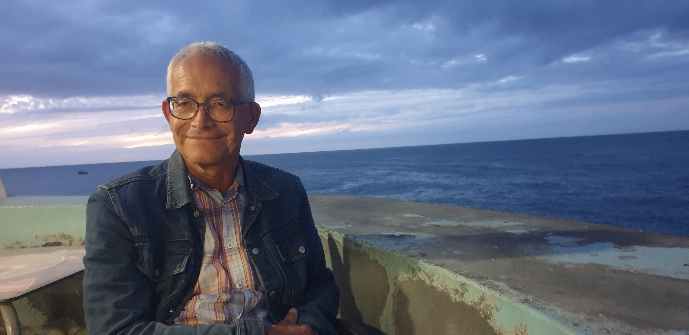
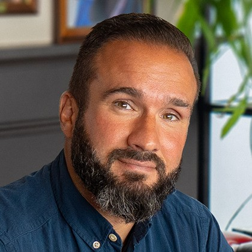

2<section id="onsbestuur" >
    <div class="container">
        <div class="row">
            <div class="col-lg-12 text-center">
                <h2 class="section-heading">Ons bestuur</h2>
                <hr class="primary">
            </div>
        </div>
    </div>
    <div class="container">
        <div class="row">
            <div class="col-lg-8 col-lg-offset-2 text-center">
                <div class="">
                    <h3>Emile Pieters</h3>
                    
                    <figcaption><i>Voorzitter</i></figcaption>
                    <p class="text-muted">Emile Pieters, voorzitter van het bestuur van Stichting Falderie. Ik ben gepensioneerd en beschik over de nodige management -en bestuurservaring. Momenteel ben ik ook voorzitter van de Raad van Toezicht van de Stichting Eigen Krachtvoer.</p>
                    <p class="text-muted">Ik woon samen met Janny in Amsterdam. Mijn grote hobby is muziek (cajon, drums, mondharmonica). Ik mag graag op reis, houd van fietsen, kamperen en concertbezoek. Verder ben ik thuiskok en natuurliefhebber. En niet in de laatste plaats levensgenieter.</p>
                   
                </div>
            </div>
           
             <div class="col-lg-8 col-lg-offset-2 text-center">
                <div class="">
                    <h3>Damon Frangias</h3>
                    
                    <figcaption><i>Penningmeester</i></figcaption>
                    <p class="text-muted">Mijn naam is Damon Frangias en vanaf 1 december 2024 actief als penningmeester voor Stichting Falderie. Toen ik voor de functie gevraagd werd, voelde ik eerst een lichte aarzeling of ik wel geschikt zou zijn.  Na het bijwonen van het eerste verwenconcert echter, was ik meteen om! Het is echt geweldig en hartverwarmend om de kinderen zichtbaar van de muziek te zien genieten en elk op hun eigen manier. Ook is het een hele mooie gelegenheid voor de ouders om samen met hun kinderen een fijne tijd te beleven. Het is me een grote eer hiervan deel te mogen uitmaken en het brengt mij persoonlijk ook voldoening. </p>
                    <p class="text-muted">Ik woon in Amsterdam Noord samen met mijn vriendin en dochter en onze hond. Van huis uit ben ik opgevoed met klassieke muziek en in de loop van mijn leven met andere muziek vertrouwd geraakt. Klassiek is de basis voor veel muziekgenres en ik vind het mooi om vaak herkenningspunten in andere muziek te vinden. In mijn vrije tijd maak ik graag langeafstandswandelingen (met of zonder hond). Ook maak ik graag jaarlijks de oversteek naar Groot-Brittannië en Ierland om daar te wandelen en te genieten van de natuur. Ik ben gek op kastelen, folklore en alles wat met de Middeleeuwen te maken heeft. Ook prachtige muziek hadden ze in die tijd!</p>
                </div>
            </div>
            <div class="col-lg-8 col-lg-offset-2 text-center">
                <div class="">
                    <h3>Manon Zuidgeest</h3>
                    
                    <figcaption><i>Algemeen bestuurslid</i></figcaption>
                    <p class="text-muted">Hi, ik ben Manon en werkzaam als muziektherapeut in de zorg. Ik werk met kinderen en volwassenen met een (zeer) ernstige meervoudige beperking. Elke keer weer als ik muziek maak zie ik de impact die het heeft; klanken toveren een glimlach op de gezichten van deze kinderen en volwassenen. Muziek leidt tot plezier, tot ontspanning, tot verwondering en contact. En dat is precies de reden waarom ik mij wil inzetten voor Stichting Falderie!</p>
                </div>
            </div>

             <div class="col-lg-8 col-lg-offset-2 text-center">
                <div class="">
                    <h3>Clarie Groenleer</h3>
                    
                    <figcaption><i>Fondsenwerver (geen bestuurslid)</i></figcaption>
                    <p class="text-muted">Mijn naam is Clarie Groenleer. Voor Falderie mag ik de fondsen binnenhalen. Dat is een nieuwe uitdaging voor mij. Wij kunnen alleen met gegeven geld onze doelen bereiken. Daar ga ik voor!</p>
                    <p class="text-muted">Wat was ik verrast toen mij werd gevraagd of ik deel wil uitmaken van een stichting die verwenconcerten organiseert voor mensen met een ernstige beperking. Juist vorig jaar nam ik afscheid van een organisatie die vakantieweken organiseert voor senioren met een lichamelijke beperking. Wat een leuke opvolging: van vakantie naar muziek!</p>
                    <p class="text-muted">Muziek maakt deel uit van mijn leven, evenals vrijwilligerswerk. Lang nadenken was niet nodig→ wat is het mooi om iets te mogen doen voor mensen die op allerlei gebied afhankelijk zijn van hulp. Blij maken met muziek, dat geeft plezier, maar ook troost.</p>
                </div>
            </div>
        </div>
    </div>
</section>
